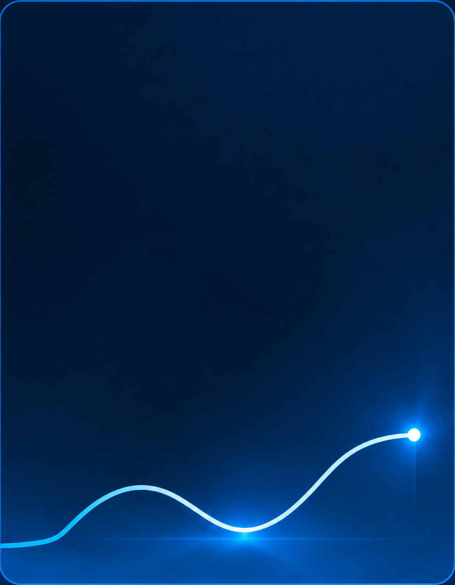
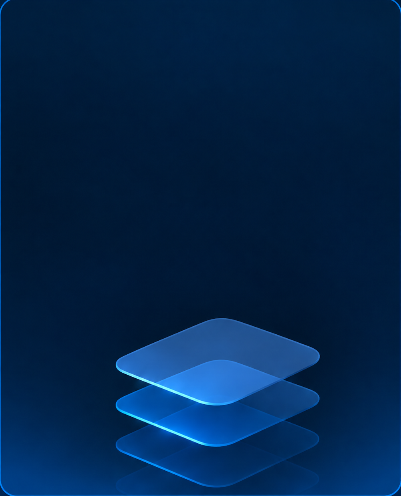

5–10 min
Saved per client on information gathering.
07The Outcome
Validated with advisors, for more focused client conversations.
I led concept testing with advisors — including the stakeholder who'd pushed for the dashboard — to see how the model held up against real workflows.
Average feedback from testing

5–10 min
Saved per client on information gathering.

Up to 30 min
Saved on more complex proposals.
500+
Advisors in trials and the target user base.
Feedback was consistent across EMEA and CH, the core scope. APAC leaned toward speed over the signal-and-context flow — noted for future markets.